1、进入方式
点击界面上端“新建客户”按钮
2、界面形式及操作步骤说明
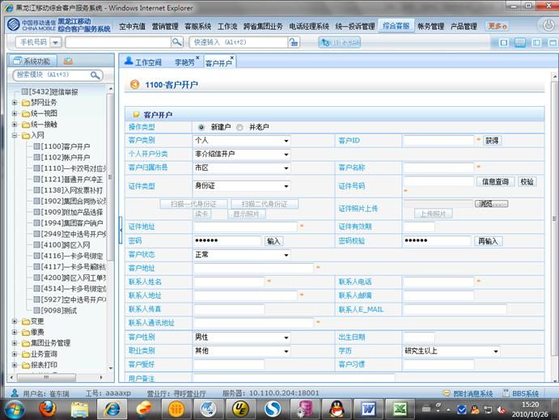
（1）新建客户
在我公司系统中没有客户资料的客户，需要进行“新建户”操作
1）点选“新建户”，然后点击“获取”，自动获取客户ID
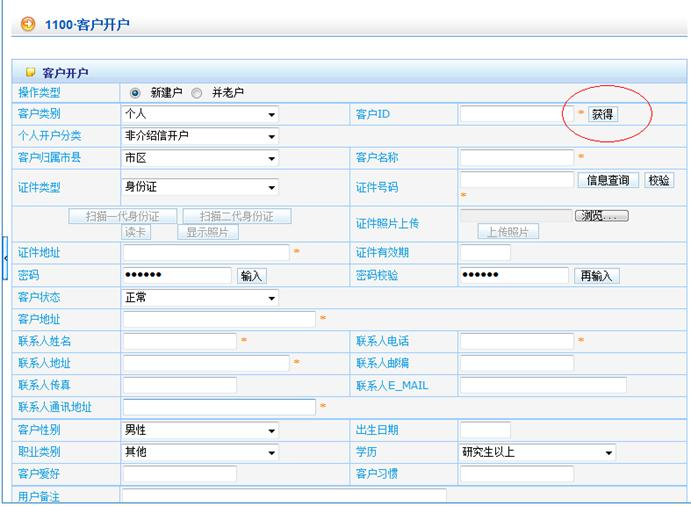
2） “客户类别”选择“个人”，“个人开户分类”选择“非介绍信开户”，根据客户出示的有效证件类型在证件类型处进行选择。输入“证件号码”，点击“信息查询”进行证件“校验”。
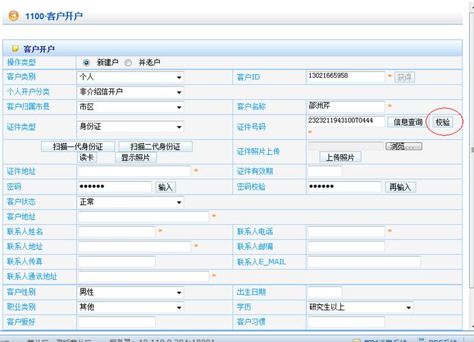
3）校验通过后，输入证件地址，然后按顺序点击“输入”和“再输入”，弹出密码输入窗口，由客户通过小键盘在“密码”和“密码校验”处输入密码，要求二次输入一致。
注：“密码”不能是6个同样数字、连号、证件中的连续数字等等。
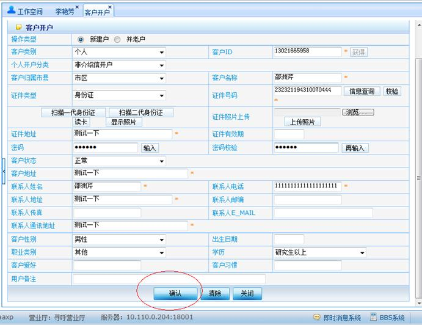
4）输入“客户地址”、“联系人姓名”、“联系电话”、“联系人地址”、“联系人通讯地址”等必填项，及完善其他客户信息后点击“确认”
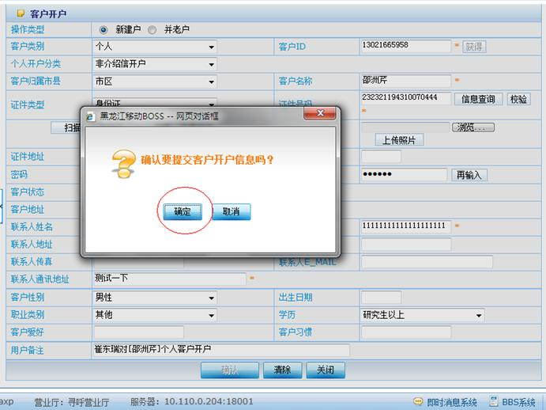
5）与客户核对相关信息后，点击“确认”提交用户信息
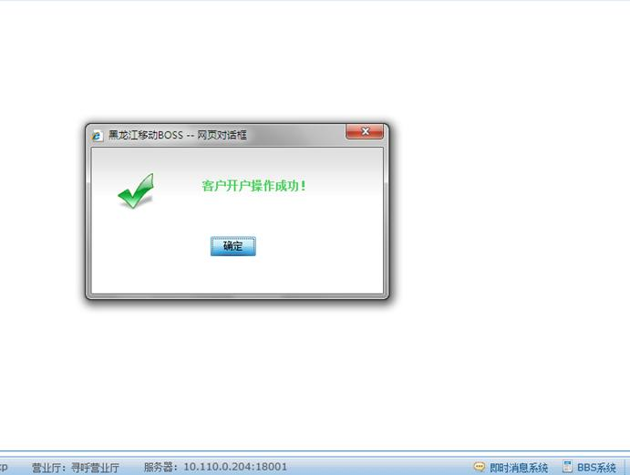
（2）并老户
在我公司系统中有客户资料的客户前来办理入网手续时，需要进行“并老户”操作。（并老户主要是为了调取客户在系统中的资料，避免重新输入）
1）点选“并老户”
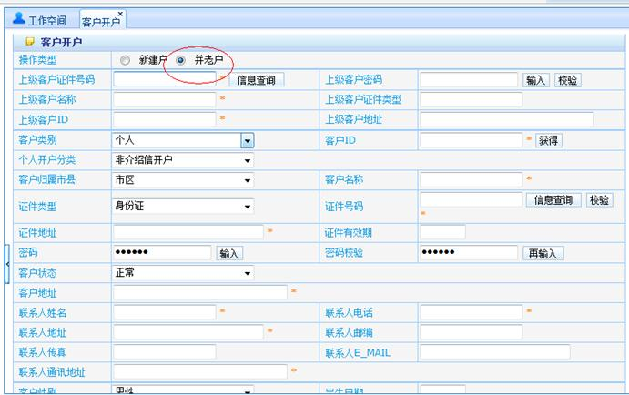
2） “上级客户ID”、“上级客户证件号码”、“上级客户名称”三者任填一项后，点击“信息查询”按钮，查出上级客户信息。
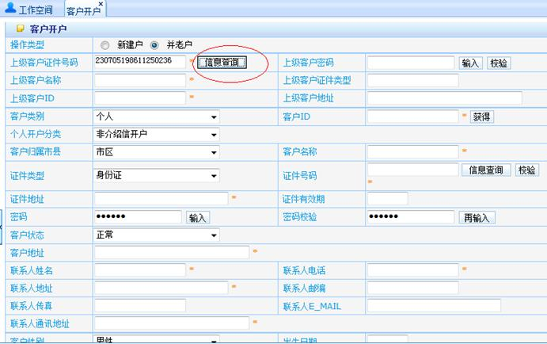
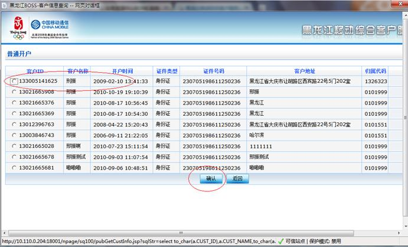
3）与客户确认后，选择一个客户信息，点击确认。
4）点击“获取”客户ID，获取新的客户ID。
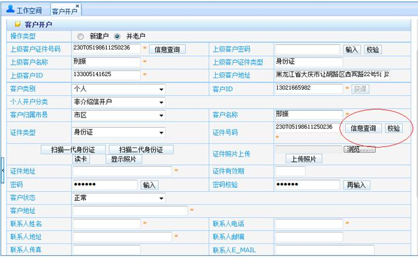
5）在证件号码处进行信息查询和校验。
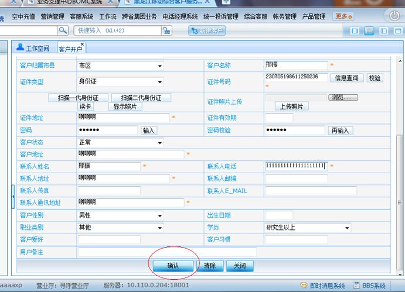
6）校验通过后，点击确认下一步。
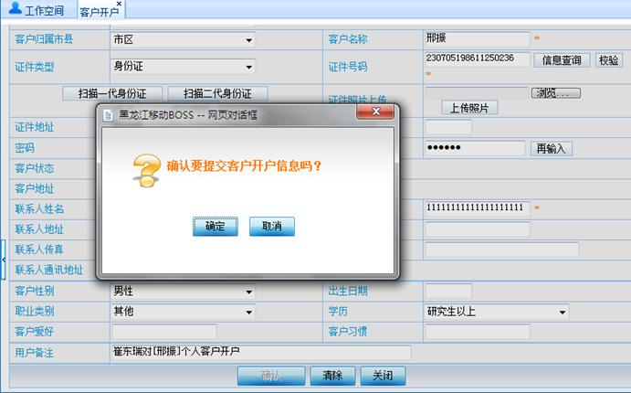
7）提交客户开户信息，点击确认。
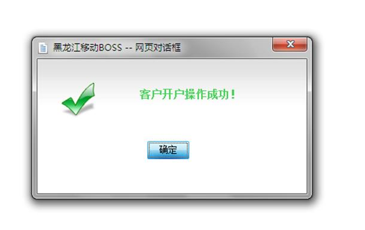
8）确认客户开户成功。
（二）单位客户开户
注：为持单位有效证件的客户进行开户
1、进入方式
点击界面上端“新建客户”按钮
2、界面形式及操作步骤说明
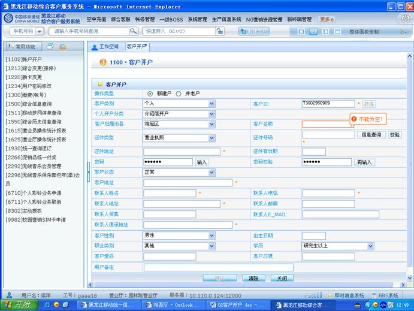
（1）新建户
在我公司系统中没有客户资料的客户，需要进行“新建户”操作
1） 点选“新建户”，然后点击“获取”，自动获取客户ID
2）“客户类别”选择“个人”，“个人开户分类”选择“介绍信开户”，“客户归属市县”不进行选择系统自动显示归属地。
3）根据客户出示的有效证件类型在证件类型处进行选择，选择“营业执照”，输入“证件号码”点击“信息查询”，输入“营业执照”证件地址，“联系人姓名”处输入代办人姓名，“联系人电话”输入代办人联系电话。
4）输入“证件地址”后“客户地址”、“联系人地址”及“联系人通讯地址”会自动显示，与“证件地址”相同。与客户沟通后，对客户地址”、“联系人地址”及“联系人通讯地址”进行修改。
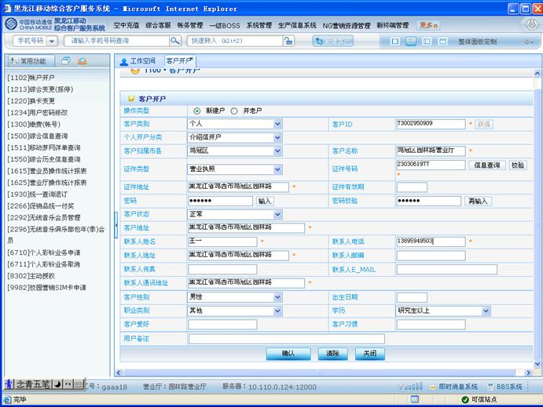
5）然后按顺序点击“输入”和“再输入”，弹出密码输入窗口，由客户通过小键盘在“密码”和“密码校验”处输入密码，要求二次输入一致。
6）完善客户其它信息最后点击确认，完成单位客户开户。
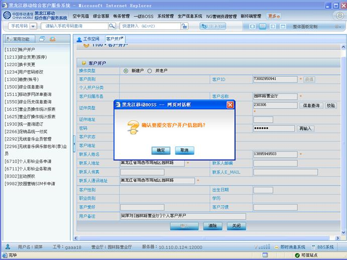
（2）并老户
在我公司系统中已有客户资料的凭单位有效证件入网的客户，需要进行“并老户”操作
1）点选“并老户”
2）在上级客户证件号码处输入已办理过移动号码的证件号码信息。
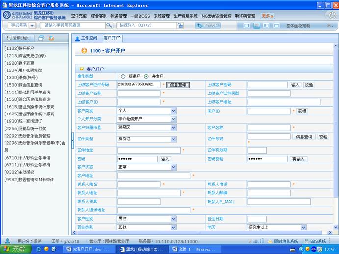
3）然后点击“信息查询”，弹出办理过的客户ID
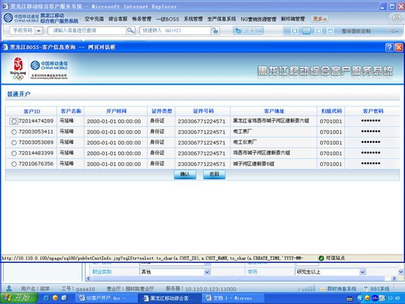
4）与客户沟通后，选择一个客户ID，点击确认，提示校验成功。
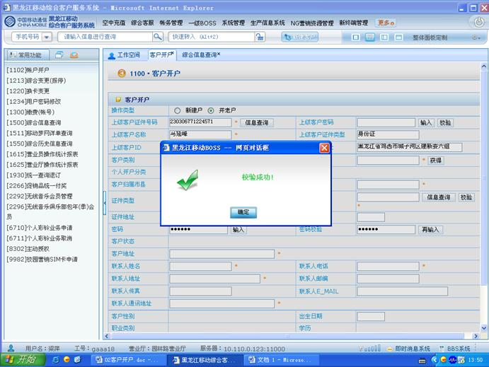
5）此时“上级客户ID”“上级客户名称”“上级客户地址”等系统会自动显示。
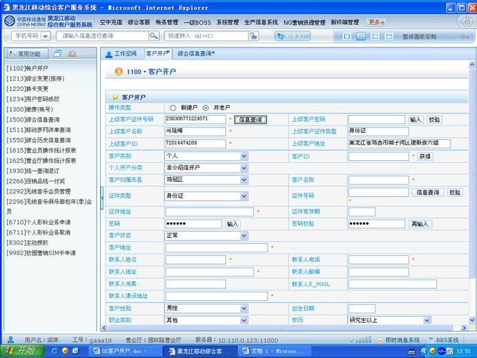
6）输入“上级客户密码”，进行校验。
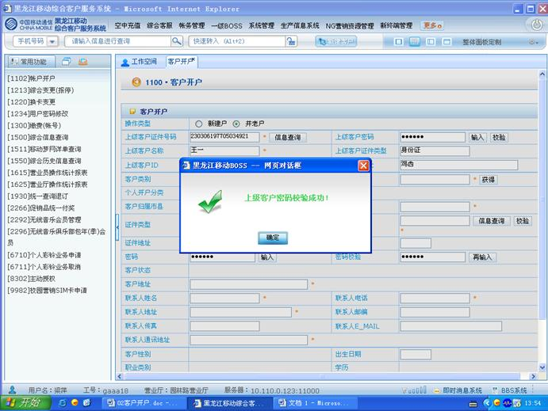
7）点击“客户ID”获取新的客户ID。
8）输入“客户名称”，选择“证件类型”并输入“证件号码”、“证件地址”等客户资料。
9）重新输入两遍六位数“客户密码”。
10）在“联系人电话”处输入代办人联系电话及代办人姓名，点击确认。
11）点击“确定”，提交客户开户信息。
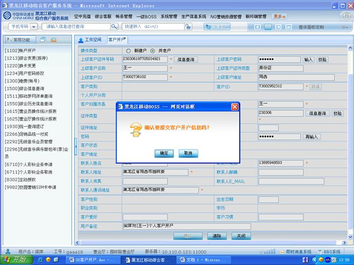
12）点击“确定”后，完成客户开户。